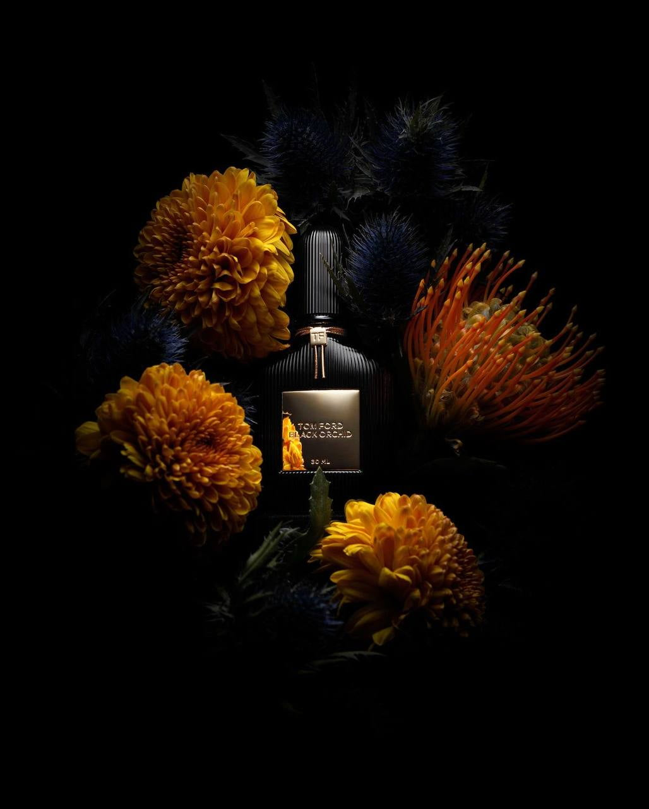

<section class="cardpage">
    <div class="container cardpage__container">
        <div class="cardpage__cont" data-aos="fade-down">
            
            <div class="cardpage__tovar_inf">
                <div class="cardpage__title">Tom Ford Black Orchid</div>
                <div class="cardpage__price">1999 ₽ </div>
                <a href="https://t.me/ddddqqqqdddd"> <button class="cardpage__btn"> Купить </button></a>

            </div>
        </div>

        <div class="cardpage__disc" data-aos="fade-up">
            <h1 class="cardpage__disc_title">Об аромате:</h1>
            <p class="cardpage__disc_about">Tom Ford Black Orchid — роскошный и загадочный аромат, созданный в 2006
                году. В его составе черные трюфели, иланг-иланг, черная смородина, орхидея, пряные цветы, древесные
                ноты, пачули, ладан, ветивер и ваниль. Этот соблазнительный парфюм подходит для тех, кто ищет уникальный
                аромат.</p>
        </div>
        <div class="cardpage__more_link"><a href="./catalog.html" class="url" data-aos="fade-up"> Смотреть также</a>
        </div>

    </div>
</section>